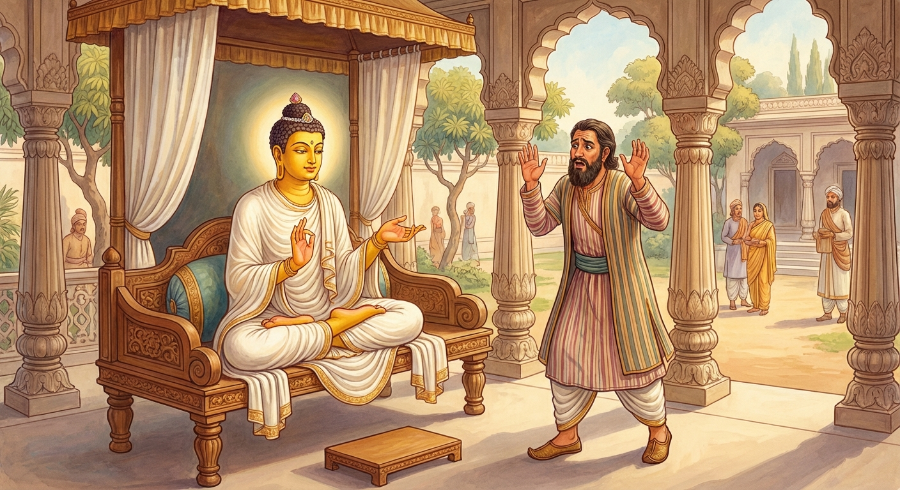

7. වාරුණිදූසක ජාතකය (47)
“න වෙ අනත්ථ කුසලෙන” යනාදී වශයෙන් එන මේ ජාතක කතාව, බුදුරජාණන් වහන්සේ ජේතවනාරාමයේ වැඩවසන සමයෙහි එක්තරා සුරා දූෂකයෙකු අරබයා දේශනා කළ සේක. අනේපිඬු සිටුතුමාගේ යහළුවෙකු වූ එක් සුරා වෙළෙන්දෙක්, ඉතා සැර මත්පැන් වර්ගයක් සාදා, මහජනයා රැස්වූ කල්හි එය විකිණීම පිණිස රන් රිදී ආදිය අයකර ගනිමින් සිටියේය. එකල්හි ඔහු “දරුව, නුඹ මුදල් ගෙන සුරා ලබා දෙන්න” යැයි තම අතවැසියාට පවරා තෙමේ නෑමට ගියේය. අතවැසියා මහජනයාට සුරා ලබා දෙන අතරතුර, මිනිසුන් අතරින් පතර ලුණු සහ සකුරු ගෙන්වාගෙන කනු දැක, “මේ මත්පැන්වල ලුණු නැතිව ඇති, එනිසා මම මෙයට ලුණු දමමි” යි සිතා, සුරා භාජනයට ලුණු නැලියක් පමණ දමා ඔවුන්ට බීමට දුන්නේය. මිනිස්සු ඒවා කට පිරෙන සේ ගෙන, ඉවත දමා “නුඹ මේ කුමක් කළෙහිද?” යි ඇසූහ. “ඔබලා මත්පැන් බී ලුණු ගෙන්වාගෙන කනු දැක, මම මත්පැන්වලට ලුණු දැමුවෙමි” යි ඔහු කීවේය. “එබඳු වූ මනාප මත්පැන් වර්ගයක් මේ මෝඩයා විසින් විනාශ කරන ලද්දේය” යි ඔහුට දොස් පවරා මිනිසුන් නැගිට ගියහ. සුරා වෙළෙන්දා ආපසු පැමිණි විට එකදු මිනිසෙකුවත් නොදැක “මත්පැන් පානය කරන්නන් කොහි ගියේදැ?” යි ඇසීය. හෙතෙම එම පුවත දැන්වීය. එවිට ආචාර්යවරයා “මෝඩය, ඔබ විසින් මෙබඳු වටිනා මත්පැන් විනාශ කරන ලද්දේය” යි ඔහුට ගරහා, මේ බව අනේපිඬු සිටුතුමාට දැන්වීය. අනේපිඬු සිටුතුමා “දැන් මට මෙය බුදුරජුන් හමුවේ කීමට කරුණක් ඇත්තේය” යි සිතා ජේතවනයට ගොස් බුදුරජුන් වැඳ මේ පුවත සැල කළේය. බුදුරජාණන් වහන්සේ “ගෘහපතිය, මොහු සුරා දූෂකයකුවූයේ දැන් පමණක් නොවේ. පෙරත් මොහු සුරා දූෂකයෙක්ම විය” යි වදාරා, ඔහු විසින් ආරාධනා කරන ලද්දේ අතීත කතාව ගෙනහැර දැක්වූ සේක.
අතීතයේ බරණැස් නුවර බ්රහ්මදත්ත රජු රාජ්යය කරන සමයෙහි බෝධිසත්ත්වයෝ බරණැස සිටුවරයා වූහ. ඔහු ඇසුරු කරමින් එක්තරා සුරා වෙළෙන්දෙක් ජීවත් විය. හෙතෙම සැර මත්පැන් වර්ගයක් සාදා, “මෙය විකුණන්න” යැයි අතවැසියාට පවරා නෑමට ගියේය. අතවැසියා ඔහු ගිය කෙණෙහිම සුරාවට ලුණු දමා, මේ ක්රමයෙන් මත්පැන් සියල්ල විනාශ කළේය. ඉක්බිති ඔහුගේ ගුරුවරයා පැමිණ ඒ බව දැනගෙන සිටුතුමාට දැන්වීය. සිටුතුමා “අනර්ථයෙහි දක්ෂ වූ මෝඩයෝ ‘යහපතක් කරන්නෙමු’ යයි සිතා අනර්ථයක්ම කරති” යි පවසා මෙම ගාථාව වදාළහ.

“අනර්ථයෙහි දක්ෂයා (නුවණ මඳ තැනැත්තා) විසින් කරනු ලබන අර්ථ චර්යාව (යහපත් යැයි සිතා කරන දෙය) සැප ගෙන දෙන්නක් නොවේ. කොණ්ඩඤ්ඤ නම් වූ අතවැසියා (යහපතක් කරමි යි සිතා ලුණු දමා) සුරාව විනාශ කළාක් මෙන්, දුෂ්ප්රාඥ තෙමේ (යහපතක් කරමි යි සිතා) අර්ථය පිරිහීමට පත් කරයි.”
එහි කොණ්ඩඤ්ඤො වාරුණිං යථා යනු, යම් සේ කොණ්ඩඤ්ඤ නම් වූ මේ අතවැසියා “යහපතක් කරන්නෙමි” යි සිතා ලුණු දමා මත්පැන් පිරිහීමට හා විනාශයට පත් කළේ ද, එලෙසින්ම අනර්ථයෙහි දක්ෂ වූ සියල්ලෝම යහපත පිරිහීමට පත් කරති යි බෝධිසත්ත්වයෝ මෙම ගාථාවෙන් ධර්මය දේශනා කළහ.
ශාස්තෘන් වහන්සේ ද “ගෘහපතිය, මොහු සුරා දූෂකයකු වූයේ දැන් පමණක් නොවේ, පෙරත් සුරා දූෂකයකුම විය” යි වදාරා පූර්වාපර සන්ධි ගළපා මෙම ජාතකය නිමවා වදාළ සේක. “එකල සුරා දූෂකයා වූයේ ද දැන් සුරා දූෂකයා ම ය. බරණැස් සිටුවරයා වූයේ මම ම වෙමි”.
හත්වන වාරුණිදූසක ජාතක වර්ණනාවයි.